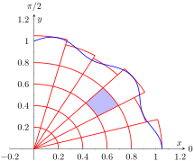
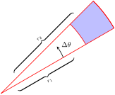

Section14.3Double Integration with Polar Coordinates
We have used iterated integrals to evaluate double integrals, which give the signed volume under a surface, \(z=f(x,y)\text{,}\) over a region \(R\) of the \(xy\)-plane. The integrand is simply \(f(x,y)\text{,}\) and the bounds of the integrals are determined by the region \(R\text{.}\)
Some regions \(R\) are easy to describe using rectangular coordinates — that is, with equations of the form \(y=f(x)\text{,}\)\(x=a\text{,}\) etc. However, some regions are easier to handle if we represent their boundaries with polar equations of the form \(r=f(\theta)\text{,}\)\(\theta = \alpha\text{,}\) etc.
The basic form of the double integral is \(\iint_R f(x,y)\, dA\text{.}\) We interpret this integral as follows: over the region \(R\text{,}\) sum up lots of products of heights (given by \(f(x_i,y_i)\)) and areas (given by \(\Delta A_i\)). That is, \(dA\) represents “a little bit of area.” In rectangular coordinates, we can describe a small rectangle as having area \(dx\, dy\) or \(dy\, dx\) — the area of a rectangle is simply length×width — a small change in \(x\) times a small change in \(y\text{.}\) Thus we replace \(dA\) in the double integral with \(dx\, dy\) or \(dy\, dx\text{.}\)
(a)
(b)
Figure14.3.1.Approximating a region \(R\) with portions of sectors of circles
Now consider representing a region \(R\) with polar coordinates. Consider Figure 14.3.1.(a). Let \(R\) be the region in the first quadrant bounded by the curve. We can approximate this region using the natural shape of polar coordinates: portions of sectors of circles. In the figure, one such region is shaded, shown again in Figure 14.3.1.(b).
As the area of a sector of a circle with radius \(r\text{,}\) subtended by an angle \(\theta\text{,}\) is \(A = \frac12r^2\theta\text{,}\) we can find the area of the shaded region. The whole sector has area \(\frac12r_2^2\Delta \theta\text{,}\) whereas the smaller, unshaded sector has area \(\frac12r_1^2\Delta \theta\text{.}\) The area of the shaded region is the difference of these areas:
Note that \((r_2+r_1)/2\) is just the average of the two radii.
To approximate the region \(R\text{,}\) we use many such subregions; doing so shrinks the difference \(r_2-r_1\) between radii to 0 and shrinks the change in angle \(\Delta \theta\) also to 0. We represent these infinitesimal changes in radius and angle as \(dr\) and \(d\theta\text{,}\) respectively. Finally, as \(dr\) is small, \(r_2\approx r_1\text{,}\) and so \((r_2+r_1)/2\approx r_1\text{.}\) Thus, when \(dr\) and \(d\theta\) are small,
Taking a limit, where the number of subregions goes to infinity and both \(r_2-r_1\) and \(\Delta\theta\) go to 0, we get
\begin{equation*}
dA = r\, dr\, d\theta\text{.}
\end{equation*}
So to evaluate \(\iint_Rf(x,y)\, dA\text{,}\) replace \(dA\) with \(r\, dr\, d\theta\text{.}\) Convert the function \(f(x,y)\) to a function with polar coordinates with the substitutions \(x=r\cos(\theta)\text{,}\)\(y=r\sin(\theta)\text{.}\) Finally, find bounds \(g_1(\theta)\leq r\leq g_2(\theta)\) and \(\alpha\leq\theta\leq\beta\) that describe \(R\text{.}\) This is the key principle of this section, so we restate it here as a Key Idea.
Key Idea14.3.2.Evaluating Double Integrals with Polar Coordinates.
Let \(z=f(x,y)\) be a continuous function defined over a closed, bounded region \(R\) in the \(xy\)-plane, where \(R\) is bounded by the polar equations \(\alpha\leq\theta\leq\beta\) and \(g_1(\theta)\leq r\leq g_2(\theta)\text{.}\) Then
The bounds of the integral are determined solely by the region \(R\) over which we are integrating. In this case, it is a disk with boundary \(x^2+y^2=1\text{.}\) We need to find polar bounds for this region. It may help to review Section 10.4; bounds for this disk are \(0\leq r\leq 1\) and \(0\leq \theta\leq 2\pi\text{.}\)
We replace \(f(x,y)\) with \(f(r\cos(\theta) ,r\sin(\theta) )\text{.}\) That means we make the following substitutions:
At first glance, this seems like a very hard volume to compute as the region \(R\) (shown in Figure 14.3.6.(a)) has a hole in it, cutting out a strange portion of the surface, as shown in Figure 14.3.6.(b). However, by describing \(R\) in terms of polar equations, the volume is not very difficult to compute.
Figure14.3.6.Showing the region \(R\) and surface used in Example 14.3.5
It is straightforward to show that the circle \((x-1)^2+y^2=1\) has polar equation \(r=2\cos(\theta)\text{,}\) and that the circle \((x-2)^2+y^2=4\) has polar equation \(r=4\cos(\theta)\text{.}\) Each of these circles is traced out on the interval \(0\leq\theta\leq\pi\text{.}\) The bounds on \(r\) are \(2\cos(\theta) \leq r\leq 4\cos(\theta)\text{.}\)
Replacing \(x\) with \(r\cos(\theta)\) in the integrand, along with replacing \(y\) with \(r\sin(\theta)\text{,}\) prepares us to evaluate the double integral \(\iint_Rf(x,y)\, dA\text{:}\)
While this example was not trivial, the double integral would have been much harder to evaluate had we used rectangular coordinates.
Example14.3.7.Evaluating a double integral with polar coordinates.
Find the volume under the surface \(\ds f(x,y) =\frac1{x^2+y^2+1}\) over the sector of the circle with radius \(a\) centered at the origin in the first quadrant, as shown in Figure 14.3.8.
The region \(R\) we are integrating over is a circle with radius \(a\text{,}\) restricted to the first quadrant. Thus, in polar, the bounds on \(R\) are \(0\leq r\leq a\text{,}\)\(0\leq\theta\leq\pi/2\text{.}\) The integrand is rewritten in polar as
The sphere of radius \(a\text{,}\) centered at the origin, has equation \(x^2+y^2+z^2=a^2\text{;}\) solving for \(z\text{,}\) we have \(z=\sqrt{a^2-x^2-y^2}\text{.}\) This gives the upper half of a sphere. We wish to find the volume under this top half, then double it to find the total volume.
The region we need to integrate over is the disk of radius \(a\text{,}\) centered at the origin. Polar bounds for this equation are \(0\leq r\leq a\text{,}\)\(0\leq\theta\leq2\pi\text{.}\)
All together, the volume of a sphere with radius \(a\) is:
We can evaluate this inner integral with substitution. With \(u=a^2-r^2\text{,}\)\(du = -2r\, dr\text{.}\) The new bounds of integration are \(u(0) = a^2\) to \(u(a)=0\text{.}\) Thus we have:
Generally, the formula for the volume of a sphere with radius \(r\) is given as \(4/3\pi r^3\text{;}\) we have justified this formula with our calculation.
Example14.3.10.Finding the volume of a solid.
A sculptor wants to make a solid bronze cast of the solid shown in Figure 14.3.11, where the base of the solid has boundary, in polar coordinates, \(r=\cos(3\theta)\text{,}\) and the top is defined by the plane \(z=1-x+0.1y\text{.}\) Find the volume of the solid.
From the outset, we should recognize that knowing how to set up this problem is probably more important than knowing how to compute the integrals. The iterated integral to come is not “hard” to evaluate, though it is long, requiring lots of algebra. Once the proper iterated integral is determined, one can use readily available technology to help compute the final answer.
The region \(R\) that we are integrating over is bound by \(0\leq r\leq \cos(3\theta)\text{,}\) for \(0\leq \theta\leq\pi\) (note that this rose curve is traced out on the interval \([0,\pi]\text{,}\) not \([0,2\pi]\)). This gives us our bounds of integration. The integrand is \(z=1-x+0.1y\text{;}\) converting to polar, we have that the volume \(V\) is:
\begin{equation*}
V = \iint_R f(x,y)\, dA = \int_0^\pi\int_0^{\cos(3\theta)}\big(1-r\cos(\theta) +0.1r\sin(\theta) \big)r\, dr\, d\theta\text{.}
\end{equation*}
Distributing the \(r\text{,}\) the inner integral is easy to evaluate, leading to
This integral takes time to compute by hand; it is rather long and cumbersome. The powers of cosine need to be reduced, and products like \(\cos(3\theta)\cos(\theta)\) need to be turned to sums using the Product To Sum formulas in the back cover of this text.
We rewrite \(\frac12\cos^2(3\theta)\) as \(\frac14(1+\cos(6\theta))\text{.}\) We can also rewrite \(\frac13\cos^3(3\theta)\cos(\theta)\) as:
This last expression still needs simplification, but eventually all terms can be reduced to the form \(a\cos(m\theta)\) or \(a\sin(m\theta)\) for various values of \(a\) and \(m\text{.}\)
We forgo the algebra and recommend the reader employ technology, such as WolframAlpha®, to compute the numeric answer. Such technology gives:
Since the units were not specified, we leave the result as almost \(0.8\) cubic units (meters, feet, etc.) Should the artist want to scale the piece uniformly, so that each rose petal had a length other than 1, she should keep in mind that scaling by a factor of \(k\) scales the volume by a factor of \(k^3\text{.}\)
We have used iterated integrals to find areas of plane regions and volumes under surfaces. Just as a single integral can be used to compute much more than “area under the curve,” iterated integrals can be used to compute much more than we have thus far seen. The next two sections show two, among many, applications of iterated integrals.
ExercisesExercises
Terms and Concepts
1.
When evaluating \(\iint_R f(x,y)\, dA\) using polar coordinates, \(f(x,y)\) is replaced with and \(dA\) is replaced with .
2.
Why would one be interested in evaluating a double integral with polar coordinates?
Problems
Exercise Group.
A function \(f(x,y)\) is given and a region \(R\) of the \(xy\)-plane is described. Set up and evaluate \(\iint_Rf(x,y)\, dA\) using polar coordinates.
3.
\(f(x,y) = 3x-y+4\) and \(R\) is the region enclosed by the circle \(x^2+y^2=1\text{.}\)
4.
\(f(x,y) = 4x+4y\text{;}\)\(R\) is the region enclosed by the circle \(x^2+y^2=4\text{.}\)
5.
\(f(x,y) = 8-y\) and \(R\) is the region enclosed by the circles with polar equations \(r=\cos(\theta)\) and \(r=3\cos(\theta)\text{.}\)
6.
\(f(x,y) = 4\text{;}\)\(R\) is the region enclosed by the petal of the rose curve \(r=\sin(2\theta)\) in the first quadrant.
7.
\(f(x,y) = \ln(x^2+y^2)\text{;}\)\(R\) is the annulus enclosed by the circles \(x^2+y^2=1\) and \(x^2+y^2=4\text{.}\)
8.
\(f(x,y) = 1-x^2-y^2\) and \(R\) is the region enclosed by the circle \(x^2+y^2=1\text{.}\)
9.
\(f(x,y) = x^2-y^2\text{;}\)\(R\) is the region enclosed by the circle \(x^2+y^2=36\) in the first and fourth quadrants.
10.
\(f(x,y) = (x-y)/(x+y)\text{;}\)\(R\) is the region enclosed by the lines \(y=x\text{,}\)\(y=0\) and the circle \(x^2+y^2=1\) in the first quadrant.
Exercise Group.
An iterated integral in rectangular coordinates is given. Rewrite the integral using polar coordinates and evaluate the new double integral.
Why is this integral difficult to evaluate in rectangular coordinates, regardless of the region \(R\text{?}\)
Let \(R\) be the region bounded by the circle of radius \(a\) centered at the origin. Evaluate the double integral using polar coordinates.
Take the limit of your answer from (b), as \(a\to\infty\text{.}\) What does this imply about the volume under the surface of \(\ds e^{-(x^2+y^2)}\) over the entire \(xy\)-plane?
16.
The surface of a right circular cone with height \(h\) and base radius \(a\) can be described by the equation \(\ds f(x,y) = h-h\sqrt{\frac{x^2}{a^2}+\frac{y^2}{a^2}}\text{,}\) where the tip of the cone lies at \((0,0,h)\) and the circular base lies in the \(xy\)-plane, centered at the origin.
Confirm that the volume of a right circular cone with height \(h\) and base radius \(a\) is \(\ds V = \frac13\pi a^2h\) by evaluating \(\ds \iint_R f(x,y)\, dA\) in polar coordinates.